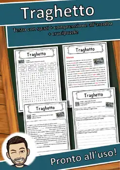
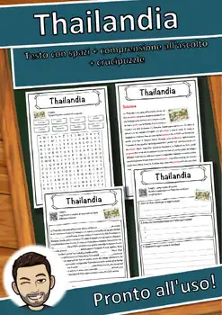
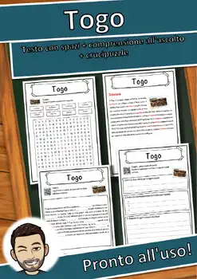
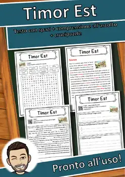
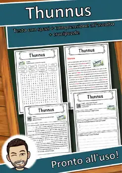

Reading Comprehension Worksheets
Informational text as a cloze passage with word bank, a QR-code listening task with free audio, and a word search – 5 pages with answer keys.
4,526 resources
Subject
Grade
By grade: 5th Grade · 9th Grade

Tuba – Italian Reading Comprehension Worksheet (Scheda): Cloze & Listening

Tromba – Italian Reading Comprehension Worksheet (Scheda): Cloze & Listening
Troia – Italian Reading Comprehension Worksheet (Scheda): Cloze & Listening

Trono – Italian Reading Comprehension Worksheet (Scheda): Cloze & Listening

Trombone – Italian Reading Comprehension Worksheet (Scheda): Cloze & Listening

Triticum – Italian Reading Comprehension Worksheet (Scheda): Cloze & Listening

Tremotino – Italian Reading Comprehension Worksheet (Scheda): Cloze & Listening

Traum – Italian Reading Comprehension Worksheet (Scheda): Cloze & Listening
Tram – Italian Reading Comprehension Worksheet (Scheda): Cloze & Listening

Traghetto – Italian Reading Comprehension Worksheet (Scheda): Cloze & Listening

Tradizione – Italian Reading Comprehension Worksheet (Scheda): Cloze & Listening

Tosse – Italian Reading Comprehension Worksheet (Scheda): Cloze & Listening

Tirolo – Italian Reading Comprehension Worksheet (Scheda): Cloze & Listening

Thailandia – Italian Reading Comprehension Worksheet (Scheda): Cloze & Listening
Toscana – Italian Reading Comprehension Worksheet (Scheda): Cloze & Listening

Torre – Italian Reading Comprehension Worksheet (Scheda): Cloze & Listening
Toronto – Italian Reading Comprehension Worksheet (Scheda): Cloze & Listening

Torio – Italian Reading Comprehension Worksheet (Scheda): Cloze & Listening

Torbiera – Italian Reading Comprehension Worksheet (Scheda): Cloze & Listening

Torace – Italian Reading Comprehension Worksheet (Scheda): Cloze & Listening
Tonga – Italian Reading Comprehension Worksheet (Scheda): Cloze & Listening
Tolosa – Italian Reading Comprehension Worksheet (Scheda): Cloze & Listening

Tolleranza – Italian Reading Comprehension Worksheet (Scheda): Cloze & Listening

Togo – Italian Reading Comprehension Worksheet (Scheda): Cloze & Listening

Titanic – Italian Reading Comprehension Worksheet (Scheda): Cloze & Listening
Titan – Italian Reading Comprehension Worksheet (Scheda): Cloze & Listening
Tiroide – Italian Reading Comprehension Worksheet (Scheda): Cloze & Listening
Tirana – Italian Reading Comprehension Worksheet (Scheda): Cloze & Listening

Timpano – Italian Reading Comprehension Worksheet (Scheda): Cloze & Listening

Timor Est – Italian Reading Comprehension Worksheet (Scheda): Cloze & Listening
Tibet – Italian Reading Comprehension Worksheet (Scheda): Cloze & Listening

Thunnus – Italian Reading Comprehension Worksheet (Scheda): Cloze & Listening

Texas – Italian Reading Comprehension Worksheet (Scheda): Cloze & Listening

Tetano – Italian Reading Comprehension Worksheet (Scheda): Cloze & Listening

Testudines – Italian Reading Comprehension Worksheet (Scheda): Cloze & Listening

Testo – Italian Reading Comprehension Worksheet (Scheda): Cloze & Listening

Testa – Italian Reading Comprehension Worksheet (Scheda): Cloze & Listening

Terre rare – Italian Reading Comprehension Worksheet (Scheda): Cloze & Listening

Talebani – Italian Reading Comprehension Worksheet (Scheda): Cloze & Listening

Terra – Italian Reading Comprehension Worksheet (Scheda): Cloze & Listening

Terbio – Italian Reading Comprehension Worksheet (Scheda): Cloze & Listening

Teppismo – Italian Reading Comprehension Worksheet (Scheda): Cloze & Listening

Teoria – Italian Reading Comprehension Worksheet (Scheda): Cloze & Listening

Teologia – Italian Reading Comprehension Worksheet (Scheda): Cloze & Listening

Tennis – Italian Reading Comprehension Worksheet (Scheda): Cloze & Listening

Tennesso – Italian Reading Comprehension Worksheet (Scheda): Cloze & Listening

Temporale – Italian Reading Comprehension Worksheet (Scheda): Cloze & Listening

Tempesta – Italian Reading Comprehension Worksheet (Scheda): Cloze & Listening
No resources found – try a different search term or filter.